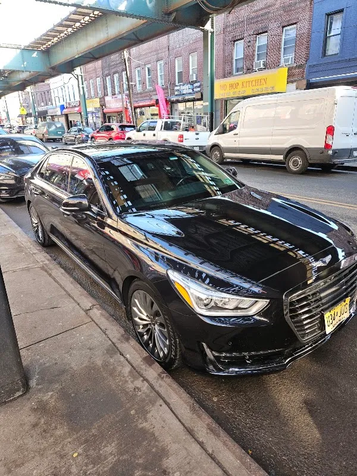
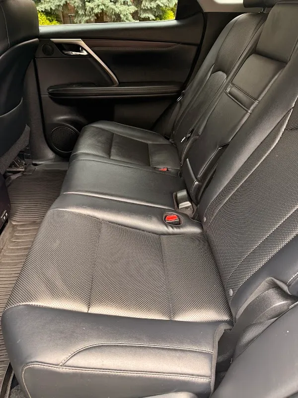

Brooklyn Splash
Car wash in Brooklyn.
225 Montauk Ave., Brooklyn, NY 11208

4.9 / 5
76 Google reviews
Customer words
“The service was excellent, the staff was friendly and professional, and my car came out looking spotless. Everything was quick, easy, and well worth it. I’ll definitely be coming back! Like”
Foyez Ahmed
Read the reviewsMontauk Avenue
Brooklyn Splash is listed at 225 Montauk Avenue. Share the vehicle and cleaning needs, then confirm the wash options, price and opening hours before visiting.
Brooklyn splash is listed at 225 Montauk Ave., Brooklyn, NY 11208. Explore the actual photographs and customer experiences before getting in touch.
Discuss your enquiry
225 Montauk Ave., Brooklyn, NY 11208
Get directionsPlan your visit
Prepare a clear enquiry for Brooklyn splash. Confirm the available service, price and timing directly.
225 Montauk Ave., Brooklyn, NY 11208